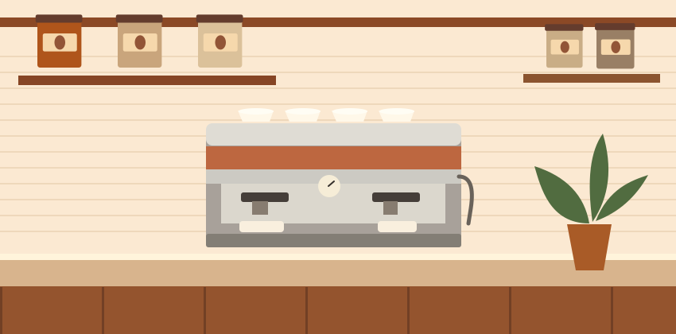
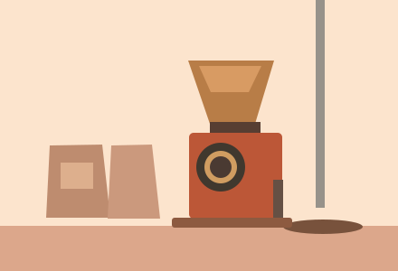
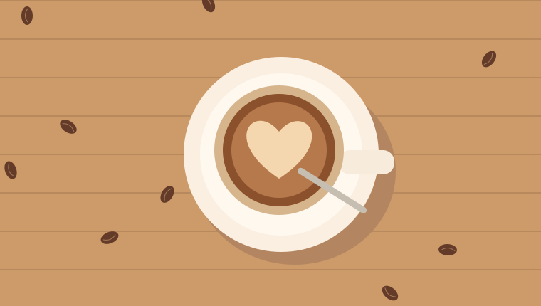

دانه و خاستگاه
دانهها را بر اساس فصل و طعم انتخاب میکنیم.



دانهها را بر اساس فصل و طعم انتخاب میکنیم.
هر بار در حجم کم، تا عطر دانه تا آخرین فنجان بماند.
دانهٔ کامل یا آسیاب مناسب ابزار دمآوریات را انتخاب کن.
از عطر اولیه تا آخرین جرعه، هر بچ را کنار پیشخوان امتحان میکنیم.
۷:۳۰ صبح تا ۶ عصر
۹ صبح تا ۶ عصر
هر روز تا ساعت ۱۵
پرسشت دربارهٔ دانهها، منو یا سفارش گروهی را بنویس.
 انتخاب این قالب
انتخاب این قالب